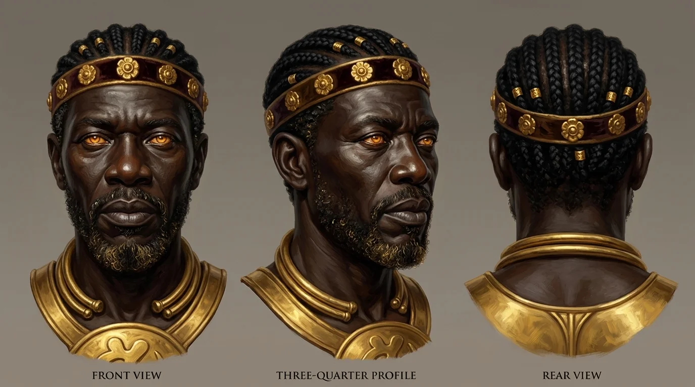
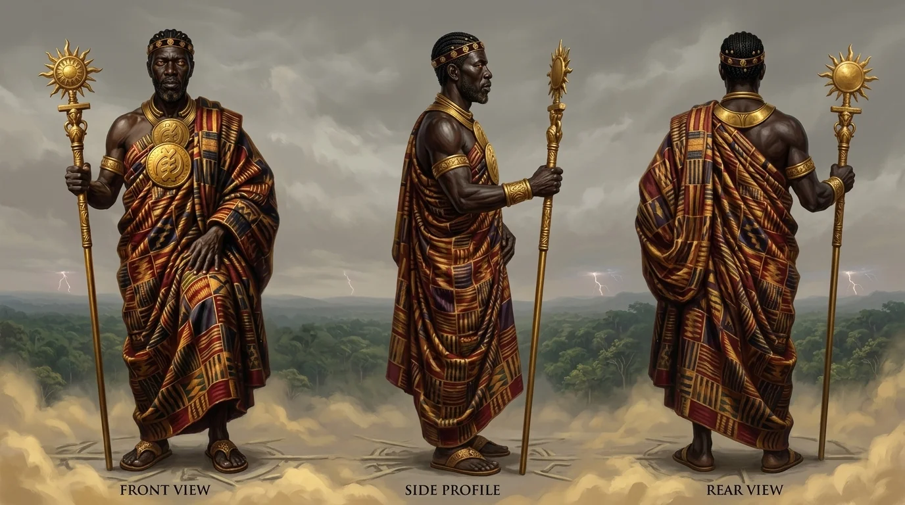

Sinopsis Mitológica:
En la cosmogonía de los pueblos akan y ashanti de Ghana y Costa de Marfil, Nyame (Onyankopon) es el dios supremo del firmamento, arquitecto incausado del cosmos y hálito inmortal de todas las almas. Soberano absoluto entronizado sobre oro en las alturas celestiales, sostiene el equilibrio moral del universo junto a Asase Yaa, castiga la soberbia replegando los cielos al infinito y custodia el cofre celestial con todas las historias del mundo hasta el célebre duelo de ingenio con la astuta araña Kwaku Anansi.
⚡ M0012
Deidades y Espíritus (Mitología Akan
• 846 palabras • 05:30 min narración
Nyame: El Dios Supremo del Cielo y la Creación ⚡ Deidades y Espíritus (Mitología Ashanti y Akan)
00:00
Ver en YouTube ↗
I. Apertura: El Soberano del Firmamento
Nyame como creador incausado, arquitecto del cosmos, forjador del sol Amowia y legislador supremo de los espíritus abosom.
01:19
Ver en YouTube ↗
II. La Faz Luminosa: Lluvias y el Aliento del Kra
La unión sagrada con la madre tierra Asase Yaa, la infusión del soplo inmortal del kra en cada nacimiento y el amparo del orden moral.
02:16
Ver en YouTube ↗
III. La Faz Severa: El Retiro de los Cielos
La ofensa de los morteros de madera, el repliegue del firmamento al infinito, el colapso de la torre humana y la justicia inexorable de los rayos.
03:27
Ver en YouTube ↗
IV. El Gran Duelo: Anansi y el Cofre de las Historias
El precio imposible de las cuatro criaturas temibles y la victoria de la astuta araña Anansi, liberando los relatos para la humanidad.
04:42
Ver en YouTube ↗
V. Legado Eterno: El Símbolo Gye Nyame
La consagración del Taburete Dorado ashanti, la ausencia de ídolos de barro y la trascendencia imperecedera del símbolo Gye Nyame.


Nyame / Onyankopon
Dios Supremo del Firmamento y la CreaciónIconografía: Deidad cósmica monumental con fisonomía de rey patriarca africano de 65 años, porte mayestático y piel de ébano lustrosa con destellos dorados. Barba trenzada blanca plateada con cuentas de oro akan, túnica ceremonial kente con motivos Adinkrahene y Gye Nyame, y bastón de orador real (okyeame poma) con remate solar.
Kwaku Anansi
La Astuta Araña y Mediador CelestialIconografía: Figura ágil y astuta de unos 40 años, piel oscura curtida, mirada chispeante de picardía e inteligencia. Viste saya corta de cazador batakari decorada con hilos plateados de telaraña y porta las calabazas de señuelo con las que atrapó a las cuatro criaturas temibles.
Asase Yaa
Diosa Madre de la Tierra FértilIconografía: Consorte divina de Nyame, matrona primordial de 40 años, piel de cálida arcilla rojiza y bronce terroso adornada con pinturas ceremoniales verdes y ocres. Viste manto con motivos vegetales y sostiene frutos y espigas.
🇪🇸 España (Álvaro)Vídeo 5m + Short
🌎 Latinoamérica (Alonso)Vídeo 5m + Short
🇺🇸 Inglés (Christopher)Vídeo 5m + Short
🇧🇷 Portugués (Antonio)Vídeo 5m + Short
🇩🇪 Alemán (Killian)Vídeo 5m + Short